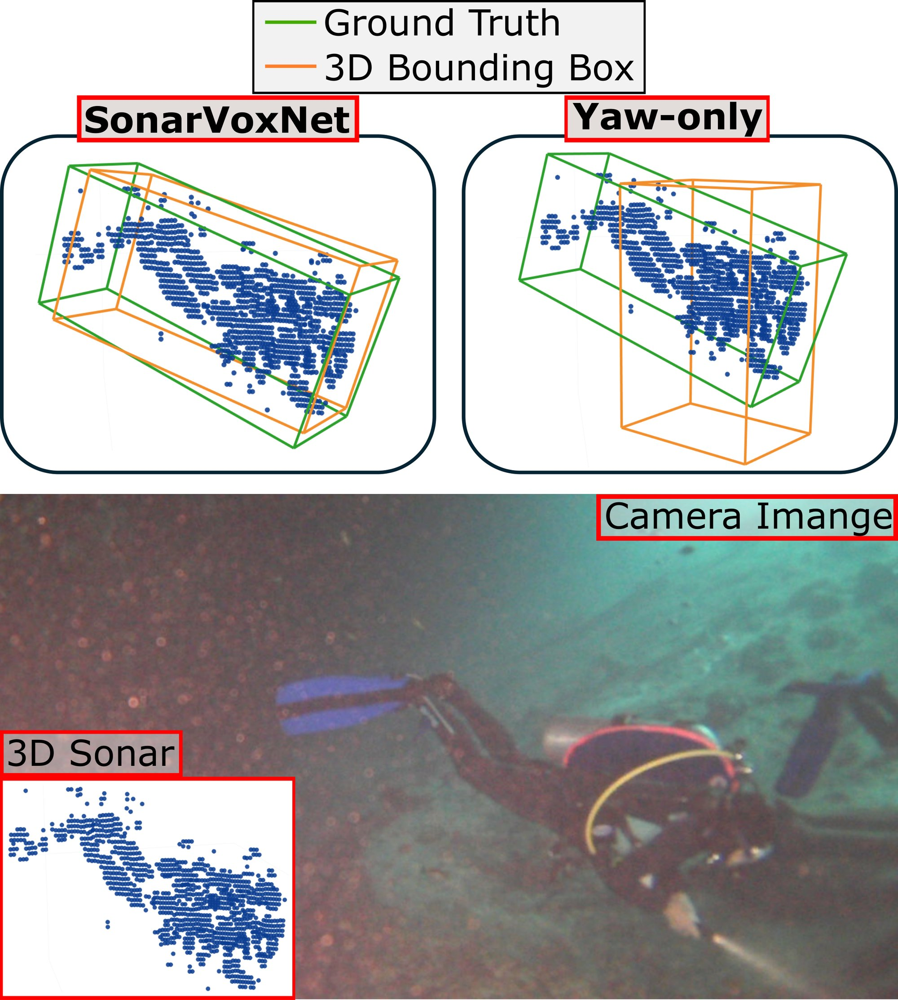
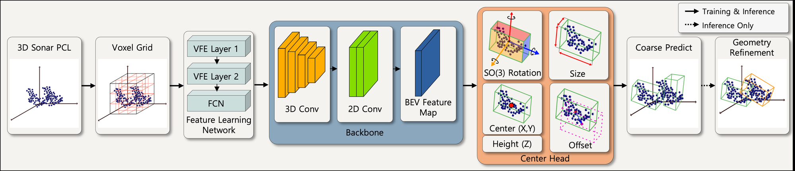
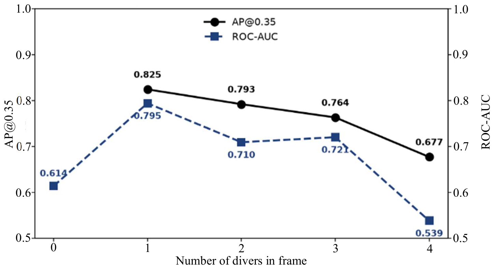

Trung Tien Dong
Trung Tien DongSonarVoxNet: Diver Detection in 3D Bounding Box using 3D Sonar

Abstract
Autonomous underwater vehicles (AUVs) assisting human divers must continuously track not only the diver's 3D position but also their full-body orientation. However, vision-based perception is unreliable underwater, and forward-looking sonar – despite being widely used – discards the elevation information needed for orientation estimation, posing a fundamental limitation. Recently commercialized 3D sonar preserves elevation but produces sparse, noisy returns, and existing detectors are built for dense LiDAR data and for targets that remain upright and rotate only about the yaw axis (e.g., vehicles, pedestrians), making them unable to represent a freely pitching and rolling diver.
To address this gap, we present two contributions. First, SonarVoxNet adapts a voxel-based encoder and an anchor-free center-based detection head to 3D sonar data, replacing the conventional yaw-only rotation representation with a continuous 6D rotation parameterization to predict full 9-DoF oriented bounding boxes—to our knowledge, the first 3D sonar diver detector to do so. Second, Diver3D is the first public 3D sonar dataset with full 3D orientation labels for divers in diverse, non-upright poses, collected at a natural cave-diving site. Through controlled ablations over the backbone and detection head, we show that the dominant factor behind accurate 3D sonar-based diver detection is the transition from yaw-only rotation to full-SO(3) rotation. This transition substantially improves detection accuracy and reduces orientation error. These results demonstrate that full-body diver orientation is recoverable from 3D sonar alone, laying the groundwork for future work on diver pose estimation and diver-robot interaction.
Contributions
- SonarVoxNet adapts a VoxelNet volumetric encoder and a CenterPoint anchor-free head to sparse, noisy 3D sonar returns, replacing yaw-only output with a continuous 6D rotation parameterization — to our knowledge, the first 9-DoF diver detector for 3D sonar.
- Diver3D: 2 hours, 37,010 frames and 34,568 annotated instances across 36 scenes, collected at Blue Grotto, a natural-spring cave-diving site near Gainesville, FL, where divers exhibit realistic pitch and roll rarely seen in pool settings — the first public 3D sonar dataset with full 3D orientation labels for human divers.
- A controlled backbone-and-head ablation showing that full-SO(3) rotation, rather than yaw-only, is the dominant factor behind accurate 3D detection on sonar, outweighing backbone choice; a sonar-specific, orientation-preserving augmentation adds further gains.
Method

Results

BibTeX
@misc{park2026sonarvoxnet,
title = {SonarVoxNet: Diver Detection in 3D Bounding Box using 3D Sonar},
author = {Eugene Park and Jiwon Lee and Seyoung Kan and Trung Dong and Xiaomin Lin and Jane Shin},
year = {2026},
eprint = {2610.01644},
archivePrefix = {arXiv},
primaryClass = {cs.RO},
url = {https://arxiv.org/abs/2610.01644}
}